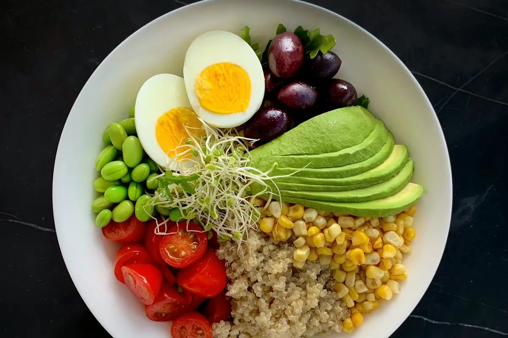
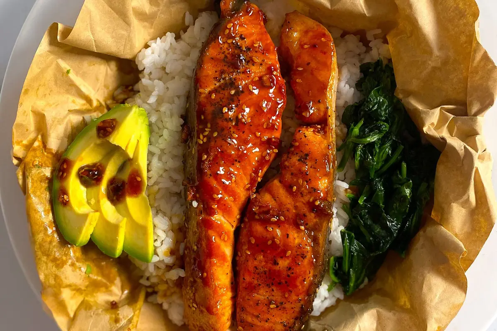

Erfassen, wie es zu dir passt.
Suche ein Lebensmittel, scanne einen Barcode oder nutze die Foto-KI. Passe die gegessene Menge an und ordne den Eintrag Frühstück, Mittagessen, Abendessen oder Snacks zu.
Die Wege ausprobierenFrühstück, schneller Snack oder Abendessen nach einem langen Tag:
Lookin bringt Mahlzeiten, Kalorien und Makros zusammen.
Mit Foto-KI, Barcode und Rezepten, die in deinen Alltag passen.

FOTO → VORSCHLAGLebensmittel und Mengen prüfen,
dann ins Tagebuch übernehmen.

 DEIN MORGEN BEGINNT HIER
DEIN MORGEN BEGINNT HIERHaferflocken, Skyr und Beeren. 8 Minuten und ein guter Start in deinen Tag.
Probier Protein-Beeren-Oats: Haferflocken kurz quellen lassen, Skyr unterrühren und Beeren darauf. Die Menge passt du an deinen Alltag an.
DEINE REZEPT-IDEEBeispielantwort · KI kann Fehler machen.
Du siehst, was deine eingetragenen
Mahlzeiten zum Tag beitragen.
Manchmal kochst du frisch. Manchmal muss es schnell gehen. Lookin macht aus einzelnen Mahlzeiten ein verständliches Tagebuch — ohne dass jeder Tag gleich aussehen muss.
Suche ein Lebensmittel, scanne einen Barcode oder nutze die Foto-KI. Passe die gegessene Menge an und ordne den Eintrag Frühstück, Mittagessen, Abendessen oder Snacks zu.
Die Wege ausprobierenKalorien, Protein, Kohlenhydrate und Fett ergeben deine Tagesbilanz. Bearbeite Mengen später, schau im Kalender zurück und behalte deine tatsächlichen Einträge im Blick.
Dein Tagebuch kennenlernenRezepte mit Zutatenmengen und Zubereitungsschritten. Filtere nach Zeit und Vorlieben oder starte mit den Zutaten, die du schon zu Hause hast.
Rezeptideen entdeckenEin Foto prüfen. Einen Barcode kennenlernen. Mit Zutaten eine Rezeptidee finden. Klick dich durch und entdecke, wie die App deinen Alltag begleitet.
Interaktive Produktführung · Beispiele ohne SpeicherungHaferflocken, Skyr & frische Beeren
Deine Einträge bleiben bearbeitbar.
In der App bestimmst du Tag und Menge.
Frühstück, Mittagessen, Abendessen und Snacks haben ihren festen Platz. Lookin addiert deine eingetragenen Mengen und zeigt dir Kalorien und Makronährstoffe gemeinsam.
Ändere Portionen, korrigiere Werte und verschiebe oder entferne Mahlzeiten. Dein Tagebuch bleibt anpassbar.
Wechsle über den Kalender zwischen Tagen. Deine Serie zählt Tage mit echten Mahlzeiteneinträgen.
Eigene Lebensmittel lassen sich mit Verpackungswerten pro 100 g, 100 ml oder Portion anlegen.
Sechs Ideen für deinen nächsten Teller. Entdecke Gerichte aus Lookin, öffne Zutaten und Zubereitung und finde heraus, was heute zu dir passt.
Kochzeit, Ernährungsweise und Rezeptfilter helfen dir bei der Auswahl. In der App lassen sich Portionen anpassen und Lieblingsgerichte merken.
Die Zubereitung führt dich Schritt für Schritt. Dein fertiges Gericht kannst du in der App als Mahlzeit übernehmen.
„Was kann ich kochen?“ gleicht ausgewählte Zutaten mit dem Katalog ab und zeigt, was schon passt und was noch fehlt.
Rezeptwerte sind Richtwerte. 30 % des App-Katalogs sind für den kostenlosen Zugang vorgesehen, der vollständige Katalog für Premium.
Ein Frühstück mit dem, was im Schrank steht? Ein schneller vegetarischer Snack? Der Coach hilft dir, aus einer Frage eine konkrete Idee zu machen.
Er kann deine Ernährungsweise und heutigen Tagebuchwerte berücksichtigen. Für Anschlussfragen musst du nicht jedes Mal von vorne anfangen.
Wie wäre es mit Protein-Beeren-Oats?
Haferflocken kurz mit Wasser quellen lassen, Skyr unterrühren und Beeren darauf. Das Rezept ist in 8 Minuten zubereitet.
Protein-Beeren-OatsRezeptidee aus LookinKI-Antworten können falsch sein und ersetzen keine medizinische Beratung. Fotoanalyse und Coach sind als Premium-Funktionen vorgesehen.
Lookin startet dort, wo du gerade bist. Freiwillige Fragen helfen bei der Anpassung — und wenn du sie überspringst, beginnst du neutral.
Ziele, Ernährungsweise, Zeit zum Kochen und Hürden im Alltag. Du wählst aus, welche Fragen du beantworten möchtest.
Manuell suchen, Barcode scannen oder ein Foto als Ausgangspunkt nehmen. Du prüfst Lebensmittel und Mengen.
Bearbeite dein Tagebuch, filtere Rezepte, sammle Favoriten und stelle Fragen. Du entscheidest, was dich begleitet.
Ernährungsdaten sind persönlich. Deshalb gehören verständliche Einwilligungen, Export und Löschung zum App-Konzept — und nicht erst ans Ende der Einstellungen.
Gesundheitsangaben und KI-Nutzung haben getrennte Einwilligungen. Sie sind nicht vorausgewählt und lassen sich in der App widerrufen.
Fotoanalyse und Coach werden nach deiner Einwilligung über den Server an OpenAI übertragen. Name und E-Mail gehören nicht zum KI-Kontext. Fotos werden nicht in Lookin gespeichert.
In der App kannst du deine Daten exportieren, den Chatverlauf entfernen und dein Konto löschen. Ein laufendes Store-Abo kündigst du separat.
Hier findest du Details zum Einstieg, zu KI und zu den geplanten Angeboten. Noch etwas offen?
Frag uns direktDu kannst Mahlzeiten eintragen, Kalorien und Makros überblicken, Rezepte finden und deine Einträge über den Kalender wieder aufrufen. Suche, Barcode und eigene Lebensmittel gehören zur Basis. Premium ergänzt KI-Foto-Erkennung, Lookin Coach und den vollständigen Rezeptkatalog.
Die Veröffentlichung für Google Play und den Apple App Store wird vorbereitet. Es gibt noch kein festes Startdatum. Die Store-Buttons sind bis dahin als „Bald verfügbar“ gekennzeichnet und öffnen nur einen Hinweis.
Diese Website stellt die mobile App vor. Handyansichten und Produktführung sind Illustrationen mit Beispielwerten. Du kannst hier keine echten Mahlzeiten tracken, kein Konto anlegen und keine Gesundheitsdaten eingeben.
Nein. Die Fragen zu deinem Alltag sind freiwillig. Wenn du sie überspringst, startet Lookin neutral. Richtwerte entstehen nur aus Angaben, die du tatsächlich gemacht oder bestätigt hast.
Du fotografierst eine Mahlzeit oder wählst ein Bild aus der Galerie. Die KI schlägt Lebensmittel, Mengen und Nährwerte vor. Du kannst das Ergebnis bearbeiten und Lebensmittel ergänzen oder entfernen. Erst nach deiner Prüfung und Bestätigung wird in der App gespeichert. Alle KI-Werte sind Schätzungen.
Produktangaben stammen aus Open Food Facts. Nicht jedes Produkt ist vollständig erfasst. Prüfe deshalb die Angaben auf der Verpackung. Ein fehlendes Lebensmittel kannst du mit den Verpackungswerten selbst anlegen.
Unter „Was kann ich kochen?“ wählst du Zutaten aus, die du zu Hause hast. Lookin gleicht sie mit dem Rezeptkatalog ab und zeigt vorhandene und fehlende Zutaten. So siehst du auf einen Blick, welche Zutaten dir zum Kochen noch fehlen.
Du kannst Ernährungsweise, Kochzeit und Rezeptfilter nutzen. Der Katalog folgt einer Halal-Inhaltsregel. Bei verpackten Produkten und unklaren Zutaten prüfst du zusätzlich selbst die Verpackung; die App rät keine unbekannten Zutaten oder Kennzeichnungen.
Vorgesehen sind 6,99 € monatlich oder 49,99 € einmal jährlich, jeweils inklusive Mehrwertsteuer. Der Jahresplan entspricht aufgerundet 4,17 € pro Monat. Die App zeigt dir die verbindlichen Store-Preise und Bedingungen, bevor du einen Kauf bestätigst.
Die vorgesehene App-Testphase läuft sieben Tage, ist einmal pro Konto nutzbar und braucht keine Zahlungsdaten. Sie endet ohne Kosten und ohne automatische Verlängerung. Ein späteres Store-Abo schließt du selbst ab.
Nein. Für Konto, Tagebuch und ausgewählte Profildaten nutzt Lookin einen Server. Manche Angaben, etwa Profilbild, Geburtstag und Körpergröße, bleiben gemäß den aktuellen Datenschutzunterlagen lokal. KI-Funktionen übertragen die benötigten Inhalte nach Einwilligung. Die App-Datenschutzerklärung beschreibt die Datenwege im Detail.
Deine Daten kannst du in der App exportieren und dein Konto anschließend löschen. Einen Coach-Verlauf kannst du separat entfernen. Ein laufendes Store-Abo wird durch die Kontolöschung nicht gekündigt; dafür nutzt du die Abo-Verwaltung des jeweiligen Stores.
Nein. Lookin dient der Orientierung im Ernährungsalltag. Die App stellt keine Diagnosen und erzeugt für Minderjährige oder bestimmte Gesundheitssituationen keine automatischen Kalorienziele. Bei medizinischen Fragen, Schwangerschaft oder Essstörungen unterstützt dich qualifiziertes Fachpersonal.
Lookin kommt auf dein Smartphone.
Mahlzeiten, Ideen und dein Ernährungstagebuch —
alles an einem Ort, in deinem eigenen Tempo.
Export und Löschung in der App oder per Anfrage.
Mehr zur Kontolöschung